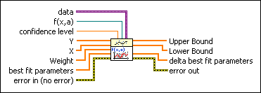
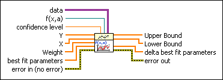

Nonlinear Curve Fit Intervals VI
Owning Palette: Advanced Curve Fitting VIs
Requires: Full Development System
Calculates statistical intervals of the best nonlinear fit for a data set (X, Y).

 Add to the block diagram Add to the block diagram |
 Find on the palette Find on the palette |
Owning Palette: Advanced Curve Fitting VIs
Requires: Full Development System
Calculates statistical intervals of the best nonlinear fit for a data set (X, Y).

| Add to the block diagram |
Find on the palette |
 |
data specifies static data that the user-defined function needs at run time. |
 |
f(x,a) is a reference to the VI that implements the fitting model. Use the VI template located at labview\vi.lib\gmath\NumericalOptimization\LM model function and gradient.vit to create the VI from a template.
 Open template Open template
|
 |
confidence level specifies the level of certainty for the confidence interval. The default is 0.95, which means the probability that the best fit falls between Lower Bound and Upper Bound is 95%. confidence level must be greater than 0 and less than 1. |
 |
Y specifies the array of dependent values. The number of input points must be greater than zero and greater than the number of best fit parameters. The number of elements in Y must be equal to the number of elements in X. |
|
X specifies the array of independent values. The number of input points must be greater than zero and greater than the number of best fit parameters. The number of elements in X must be equal to the number of elements in Y. |
|
Weight is the array of weights for the observations Y. Weight must be the same size as Y. If you do not wire an input to Weight, this VI sets all elements of Weight to 1. If an element in Weight is less than 0, this VI uses the absolute value of the element. |
|
best fit parameters specifies the array of parameters that minimizes the weighted mean square error between the solution vector and the observed y-values. |
 |
error in describes error conditions that occur before this node runs. This input provides standard error in functionality. |
 |
Upper Bound returns the upper bound of the confidence interval. |
|
Lower Bound returns the lower bound of the confidence interval. |
|
delta best fit parameters returns the confidence radius of best fit parameters. |
 |
error out contains error information. This output provides standard error out functionality. |